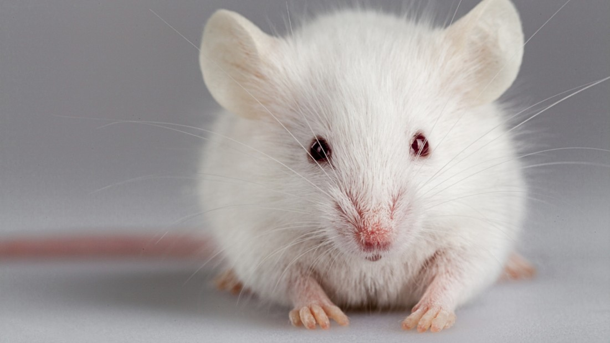

Azil Clifford



Korišćenje životinja u tzv. naučne i edukativne svrhe je posebno problematična oblast jer predstavlja
polje još uvek aktuelne diskusije i podeljenih mišljenja kako među laicima tako i u stručnoj javnosti.
Ogledne ili eksperimentalne životinje se koriste u različite svrhe:
Edukacija
Fundamentalna i primenjena naučna istraživanja
Testiranja škodljivosti lekova, supstanci, proizvoda
Testiranja i istraživanja u vojsci itd.
Životinje koje se najviše koriste su miševi i pacovi ali i druge životinjske vrste (psi, mačke, svinje,
majmuni itd.).
Postojeća evropska i domaća regulativa se isključivo bazira na zaštiti dobrobiti oglednih životinja a ne
prava.
Koncept dobrobiti podrazumeva primenu tzv. 3 R pravila.
3 R pravilo ( W. Russel i R. Burch 1959.) podrazumeva poštovanje sledećih principa:
Replacement-zamena životinjskih modela ili vrste u zavisnosti od filogenteskog nivoa
Reduction-smanjenje broja eksperimentalnih životinja
Refiniment-usavršavanje metoda ali i unapređivanje uslova u kojima se životinje drže
Alternativni modeli mogu biti:
Kulture ćelija i tkiva
Matematički i kompjuterski modeli i programi
Baze postojećih podataka itd.
Poseban problem vezan za ogledne životinje jeste većinski stav naučnika da se nauka bez primene
životinjskih modela ne može razvijati uz istovremeno odsustvo zainteresovanosti za razvijanje
alternativa.
Mnogi ogledi se repliciraju uz obrazloženje da se bilo kakva izmena eksperimentalnog nacrta može
smatrati naučno opravdanom novinom.
Takođe preovlađujuću većinu u etičkim komisijama čine sami naučnici.
Zalaganje za zaštitu dobrobiti oglednih životinja možemo da posmatramo sa aspekta privremenog rešenja i
trenutne pozicije do konačnog ukidanja eksperimenata koji uključuju životinjske modele.
Sa druge strane zagovarači prava životinja i totalnog oslobođenja opravdano nameću pitanje da li se na
taj način samo legalizuje i opravdava eksploatacija životinja i time prolongira.
Veza pojedinih naučnih disciplina (medicina) sa mogućnošću uticaja na zdravlje i život ljudi koristi tu
poziciju da bi opravdala svoju praksu i time je još više utemeljuje.
Kada diskutujemo o opravdanosti upotrebe životinja u eksperimentima postavljamo pitanje
etičke i naučne opravdanosti.
Ukoliko nismo specisti i smatramo da pripadnici svih vrsta imaju jednako pravo na život jer su
kriterijumi prvenstva artificijelni i bazirani na moći, a ne prirodnom pravu, onda eksperimente na
životinjama smatramo etički neprihvatljivim.
Posebno osetljivo je pitanje procene etičke opravdanosti ogleda koju donose etičke komisije jer se u
praksi često meša i izjednačava etička i naučna opravdanost.
Stoga etičnost ogleda u praksi procenjuje se isključivo spram toga koliko životinja pati, a ne da li je
ogled uopšte etički opravdan ili ne.
Rad na zaštiti oglednih životinja kod nas nema tako dugu istoriju kao što je to slučaj sa drugim
zemljama.